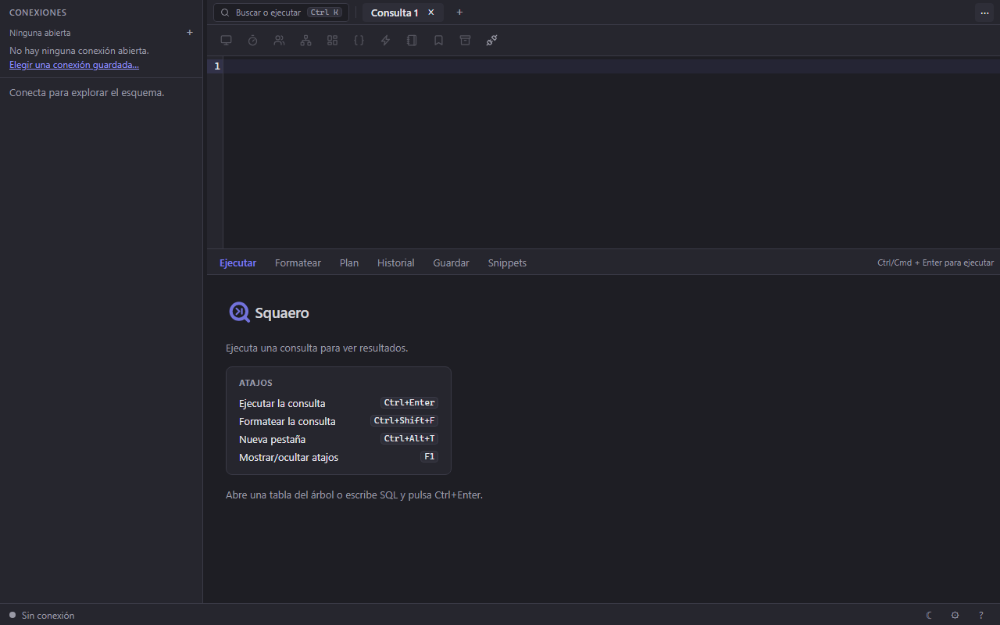
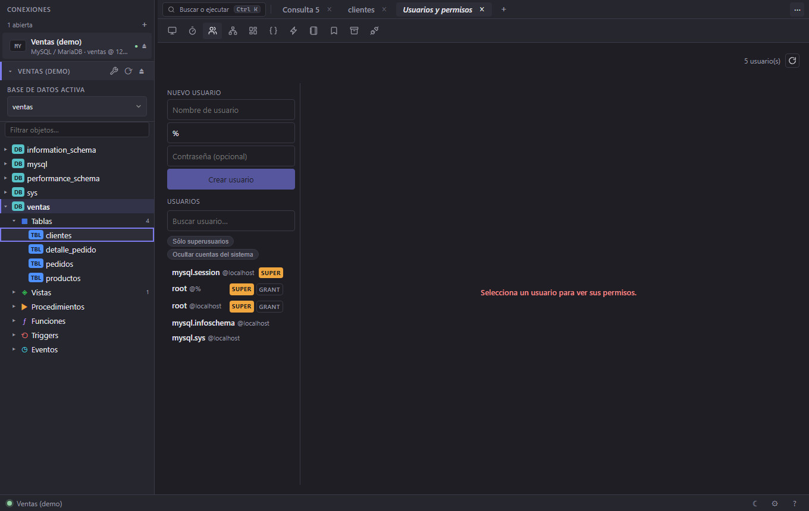

Squaero
SquaeroManual de usuario
Cómo se usa Squaero
Una página, una tarea por apartado. Busca con Ctrl+F lo que quieras hacer; cada sección tiene su propio enlace para compartirla.
1. Primeros pasos
Instalar
- Descarga
squaero-X.Y.Z-x86.mside la página de versiones. - Ábrelo y sigue el instalador. No hace falta instalar aparte ningún runtime: la interfaz va dentro del ejecutable y usa el WebView del sistema.
- Si quieres verificar la descarga, en la misma versión está
SHA256SUMS.txt.
Windows de 32 bits, por ahora. El instalador es x86: lo exigía el cliente de Informix, que ya no se usa. Corre igual en Windows de 64 bits. macOS está en camino.
En Linux (x86_64) hay dos opciones:
- El .deb, para Ubuntu 24.04+ y Debian 13+: descarga
squaero_X.Y.Z_amd64.debde la misma página e instálalo consudo apt install ./squaero_X.Y.Z_amd64.deb. apt trae el cliente de cada motor. - El snap, para cualquier distribución con snapd:
sudo snap install squaero.
Informix. No hace falta ningún cliente de IBM: Squaero se conecta
por DRDA al listener drsoctcp del servidor, normalmente en el
puerto 9089 (no el 9088 de los clientes de IBM). Si tu servidor no lo tiene,
pídele al administrador que lo añada.
La ventana, por partes
La primera vez la app abre maximizada y sin ninguna conexión:

- Barra superior — Buscar o ejecutar (Ctrl+K), que encuentra objetos, herramientas y acciones sin quitar las manos del teclado; las pestañas abiertas; y ⋯, que despliega la tira de herramientas.
- Barra lateral — arriba, las conexiones abiertas: una fila por cada una, con su motor y a qué servidor apunta. Debajo, el explorador, con una sección plegable por conexión abierta.
- Centro — las pestañas. Cada una es una consulta, los datos de una tabla o una herramienta, y queda atada a la conexión con la que se abrió.
- Barra de estado — conexión activa, filas y columnas del último resultado, cuánto tardó y con qué alcance se ejecutó, el paginador, el cambio de tema y F1 para los atajos.
Dónde queda todo
Las conexiones, el historial, los snippets y las preferencias se guardan en tu equipo. No hay cuenta, no hay nube y no hay telemetría: nada de lo que haces sale de la máquina salvo lo que la propia consulta manda al servidor de base de datos.
Tus pestañas de consulta también vuelven al reabrir la app, con el SQL que tuvieras escrito aunque no lo hubieras ejecutado — que es justo lo que se pierde cuando se va la luz; lo ejecutado ya estaba en el Historial. Se guarda solo mientras escribes, sin botón. No vuelven los resultados: la consulta se vuelve a ejecutar cuando tú quieras, en vez de enseñarte una rejilla vieja con cara de recién traída.
2. Conectar a una base
Crear una conexión
Las conexiones guardadas viven en su propia pestaña: ábrela con ⋯ y luego Conexiones. Es la única herramienta que funciona sin estar conectado a nada, porque es por donde se crea la primera.
- Pulsa + Nueva conexión.
- Ponle Nombre, y si quieres un Color, un Grupo y un Icono. El color pinta la franja de la ventana cuando esa conexión tiene el foco — la forma más rápida de no ejecutar en producción creyendo que estás en pruebas. El grupo es solo un nombre: escribir uno nuevo lo crea.
- Elige el Motor. El formulario cambia a los campos que ese motor necesita (tabla de abajo).
- Rellena los datos y guarda: vuelves a la lista con la conexión nueva ya en ella. Abrirla es el paso siguiente.
| Motor | Campos |
|---|---|
| SQLite | Archivo de base de datos — la ruta del .db, o :memory: para una base temporal. |
| MySQL / MariaDB | Host, Puerto (3306), Base de datos, Usuario, Contraseña. |
| PostgreSQL | Host, Puerto (5432), Base de datos, Usuario, Contraseña. |
| IBM Informix | Host, Puerto / servicio (un número como 1526 o un nombre de /etc/services), Servidor (INFORMIXSERVER), Base de datos, Usuario, Contraseña. |
| MongoDB | Host, Puerto (27017), Base de datos, Usuario, Contraseña, Base de autenticación (normalmente admin) y TLS. |
| SQL Server | Host, Puerto (1433) o Instancia (un nombre como SQLEXPRESS, en vez del puerto), Base de datos, Usuario, Contraseña y Cifrado. |
En los motores de servidor, el campo Base de datos se puede desplegar: cuando el resto de los datos ya son válidos, trae la lista real del servidor en vez de hacerte teclear el nombre.
Abrir una conexión
El + de la barra lateral abre el buscador. Escribe y se va acotando por nombre, por motor o por servidor, sin distinguir mayúsculas ni acentos: nomina encuentra Nómina. Varias palabras estrechan, no suman — ventas dev pide las dos.
- ↑ y ↓ recorren los resultados y Enter abre el señalado; Esc cierra.
- Las que ya están abiertas salen marcadas Abierta: elegir una de esas no vuelve a conectar, solo te lleva a ella.
- Al pie están Nueva conexión, Importar y Gestionar, que llevan a la pestaña de conexiones.
Conectar por un túnel SSH
Disponible en todos los motores de servidor (todos menos SQLite). En el mismo formulario, el bloque SSH:
- Host SSH, Puerto SSH (22) y Usuario SSH.
- Autenticación SSH: Agente SSH (lo predeterminado), Contraseña o Clave privada — con su archivo y, si la tiene, su Passphrase.
- Clave de host SSH: por omisión aceptar y recordar (TOFU), que acepta la primera vez y rechaza si la clave cambia después. También hay modo estricto y, si de verdad hace falta, sin verificar.
- Host destino y Puerto destino son avanzados: solo si la base no está en el mismo equipo al que entras por SSH.
Cifrar la conexión
MySQL/MariaDB y PostgreSQL tienen Modo SSL (desde desactivado hasta verificar identidad) con sus campos de Certificado CA, Certificado cliente y Clave cliente. MongoDB tiene el interruptor TLS.
SQL Server tiene Cifrado: obligatorio por omisión, solo si el servidor lo exige, desactivado (solo cifra el inicio de sesión) o estricto (TDS 8, SQL Server 2022+). Cifra el tráfico, pero no puede verificar el certificado del servidor: no hay campo de CA.
Traerte las conexiones de otra herramienta
Mudarte no debería empezar por reteclear treinta servidores. Importar, en la pestaña de conexiones, lee tres formatos y los reconoce por su contenido, no por la extensión:
- El export de Squaero (JSON).
- DBeaver:
data-sources.json. Selecciona a la vez elcredentials-config.jsonque está a su lado y también vienen las contraseñas. Sus carpetas se convierten en grupos. - Navicat: el archivo
.ncx, con contraseñas.
De cada conexión llegan motor, host, puerto, base, usuario, el túnel SSH y la contraseña.
Lo que no puede traer, lo dice. Un motor que Squaero no lleva
(Oracle, SQL Server) se reporta por su nombre en vez de mapearse a un driver
que se le parezca, y una contraseña que no se puede leer —un archivo de
Navicat 11, un credentials-config.json que no seleccionaste— se
cuenta y se informa. Nunca se adivina.
Llevártelas a otro equipo
Exportar, en la misma pestaña, guarda tus conexiones en un JSON. La casilla Incluir contraseñas hace justo eso, y te avisa de lo que implica: quedan en texto plano dentro del archivo. Sin marcarla, el archivo es seguro de compartir y cada quien pone su contraseña al conectar.
Varias conexiones a la vez
Puedes tener abiertas todas las que quieras, y la barra lateral las lista todas: una fila por conexión, con su motor y a qué servidor apunta. Un clic en una fila cambia el foco a esa conexión — no abre ni cierra nada—, y el explorador de debajo le da a cada una su propia sección plegable, así que la misma tabla se puede mirar en producción y en pruebas sin cambiar de sitio.
Cada fila lleva su ⏏ para cerrar esa conexión, y si el servidor deja caer la sesión la fila lo dice y ofrece reconectar sin perder las pestañas que colgaban de ella.
Cada pestaña recuerda con qué conexión nació y sigue trabajando contra ella aunque cambies el foco a otra, así que una consulta de pruebas no se ejecuta sola en producción por haber cambiado de conexión en la barra.
3. Explorar el esquema
El árbol de objetos
La barra lateral agrupa por tipo: Tablas, Vistas, Procedimientos, Funciones, Triggers y Eventos. Las carpetas cargan cuando las abres, así que un esquema de miles de objetos no cuesta nada al conectar.
- Filtrar objetos… acota el árbol mientras escribes.
- Refrescar (F5) vuelve a leer el esquema y los datos.
Qué hay en el clic derecho
Sobre una tabla: Abrir datos, Ver estructura, Modificar tabla…, Índices y constraints…, Importar datos…, Copiar nombre y Nueva tabla…. Sobre una vista, un procedimiento, una función o un trigger: Ver definición… y Editar definición…. El menú se adapta al objeto — lo que no aplica, no aparece.
La lista de objetos
El botón Objetos de la barra superior abre la base activa como una tabla: Nombre, Tipo, Filas, Tamaño y Comentario, con filtro por tipo. Doble clic abre los datos. Sirve para lo que el árbol hace mal: ordenar por tamaño, buscar la tabla más grande, ver de un vistazo cuántas filas tiene cada cosa.
En MongoDB esta lista no aplica: no hay catálogo SQL que consultar. Usa el árbol de objetos, que muestra las colecciones.
Encontrar cualquier cosa
Ctrl+K abre Buscar o ejecutar: escribe el nombre de una tabla, de una herramienta o de una acción y ejecútala desde ahí.
4. Escribir y ejecutar SQL
Ejecutar
- Abre una pestaña con Consulta o Ctrl+Alt+T.
- Escribe. El editor sugiere tablas y columnas de la conexión activa, además de palabras clave; Ctrl+Espacio abre las sugerencias a mano.
- Ctrl+Enter ejecuta.
Qué se ejecuta: si hay texto seleccionado, la selección; si no, la sentencia donde está el cursor; y si toca, el documento entero. La barra de estado dice cuál de las tres fue, junto con las filas y el tiempo que tardó.
Formatear
Ctrl+Shift+F, o el botón Formatear. Usa el dialecto del motor de la conexión activa. Una consulta de MongoDB la deja intacta a propósito: mongosh no es SQL.
Ver el plan
Plan (Ctrl+Shift+E) ejecuta el EXPLAIN del motor y lo dibuja como árbol, en vez de dejarte leer la salida cruda.
Historial y snippets
- Historial guarda lo que has ejecutado con su duración y marca las lentas. Desde ahí se reejecuta en una pestaña nueva.
- Guardar (Ctrl+Shift+S) convierte la consulta en un snippet con nombre. Guarda la selección, la sentencia o el documento, según lo que tengas.
- Ctrl+J abre la paleta de snippets: Enter lo abre, Shift+Enter lo ejecuta, Ctrl+Enter lo inserta en el cursor.
- El panel Snippets los busca por nombre o por lo que hacen, y permite renombrar, duplicar, borrar, e importar / exportar el set completo como JSON para compartirlo con el equipo.
El constructor visual
Si no quieres escribir el SQL: elige Tabla, marca Columnas (vacío = todas), añade Condiciones combinadas con Y/O, un Ordenar por y un Límite. El SQL generado se ve todo el tiempo, así que también sirve para aprender la sintaxis del motor.

El notebook
Para un análisis que quieras contar, no solo ejecutar: celdas de SQL y
de Markdown intercaladas, con el resultado debajo de cada una.
Los Parámetros se sustituyen en el SQL como :nombre antes
de ejecutar, hay Ejecutar todo, y el conjunto se exporta a Markdown o
a HTML.
MongoDB
No es SQL: las consultas se escriben al estilo de mongosh
(db.coleccion.find(…), db.coleccion.aggregate(…)) y
los documentos se aplanan para caber en la rejilla.
5. Ver y editar datos
Abrir una tabla
Doble clic en el árbol, o Abrir datos en su menú. La pestaña abre con el panel Filtro plegado sobre la rejilla. Si esa tabla ya está abierta, volver a pulsarla te lleva a su pestaña en vez de crear otra —y no vuelve a ejecutar la consulta, para no tirar los cambios que tuvieras sin confirmar. Para releer los datos, F5.
Filtrar y ordenar (en el servidor)
Esto es lo importante: el filtro del panel se traduce a WHERE y
ORDER BY reales, así que trabaja sobre toda la tabla, no
sobre las filas que ya se descargaron.
- + condición: elige Columna, Operador y Valor.
- Añade las que necesites y di cómo se combinan: y / o.
- + orden para ordenar por una o varias columnas, ascendente o descendente.
- Aplicar. Limpiar deja la tabla como estaba.
Operadores disponibles: =, ≠, <,
>, ≤, ≥, como,
contiene, entre, está en la lista, es nulo y
no es nulo. El botón SQL abre en otra pestaña la consulta que
el panel acaba de construir, por si quieres seguir a mano desde ahí.
Los filtros de la cabecera de cada columna en la rejilla son otra cosa: esos afinan solo las filas ya cargadas. La propia rejilla lo avisa cuando el resultado viene truncado.
Paginar
‹ Anterior y Siguiente › en la barra de estado, que también
muestra el rango («Filas 201–400»). Es paginación real por
OFFSET, no un recorte de lo descargado.
Editar sin sustos
Los cambios se acumulan en una transacción y no tocan la base hasta que los confirmas:
- Doble clic en una celda para editarla. Fila añade una fila nueva; el icono de borrar marca una fila para eliminación (y se puede deshacer).
- El botón Confirmar (n) lleva la cuenta de los cambios pendientes. Al pulsarlo se ve el SQL exacto que se va a ejecutar.
- Aplicar y confirmar hace el commit. Descartar tira todo.
Poner NULL está en el clic derecho sobre la celda. Hace falta porque
vaciar la casilla no es lo mismo: eso escribe una cadena vacía, que es otro
valor. Una celda con NULL —el que ya estaba o el que acabas de poner— se
muestra vacía pero con NULL escrito en gris dentro. Si la
columna es NOT NULL, lo rechaza el motor con su propio error: la rejilla no
puede saberlo de antemano.
Solo lectura sin clave primaria. Si la tabla no tiene PK, la rejilla no deja editar: no habría forma de identificar la fila sin riesgo de actualizar de más. El panel lo dice en vez de fallar al guardar.
Registros anchos: el detalle de fila
Cuando la tabla tiene cuarenta columnas, la rejilla se queda corta. Ver detalle de fila abre esa fila como formulario, con Fila anterior / Fila siguiente para recorrerlas y Esc para cerrar. Se puede editar desde ahí igual que en la rejilla.
Seguir una llave foránea
- En una celda que es FK, el selector muestra los registros de la tabla referenciada y guarda el valor que elijas: se acabó copiar identificadores a mano.
- La flecha de la celda abre Datos relacionados: todas las tablas que referencian ese valor, con cuántas filas tiene cada una. Desde ahí se abre en pestaña o se manda al editor.
Marcar filas y llevarlas a otro lado
Cada fila lleva su número a la izquierda, y al pasar el ratón ese número se convierte en una casilla. La casilla de la cabecera marca o desmarca todas las filas que se estén viendo, y Mayús+clic en una casilla marca el rango desde la última que tocaste. También valen Ctrl+clic, Mayús+clic sobre la fila y Ctrl+A; Esc desmarca.
Con filas marcadas aparece una barra sobre la rejilla: Copiar (Ctrl+C), Copiar como INSERT, Duplicar (Ctrl+D) y Pegar. Las mismas acciones, más Transferir a otra tabla…, están en el clic derecho, y funcionan también con una sola fila.
Copiar filas y pegarlas como filas nuevas
Copiar guarda las filas tal cual, con sus NULL, además del texto que reciben otros programas. Al pegarlas sobre una tabla (Ctrl+V) se añaden abajo como filas nuevas sin guardar: se pueden editar celda a celda y quitarse con su ✕. Los valores se colocan por nombre de columna, así que sirve para copiar de una tabla a otra.
La barra de filas pendientes decide qué pasa con la clave primaria: la genera la base (lo normal al pegar en la misma tabla) o conservar la copiada. Si un valor ya existe —la clave, o una columna con índice único— la celda se marca en rojo y no deja guardar hasta corregirla. Lo que no se puede saber de antemano lo dice la base al guardar, señalando la fila que falló.
Revisar y guardar (Ctrl+S) enseña el SQL antes de ejecutarlo, como cualquier otra edición; Descartar las tira.
Graficar el resultado
Graficar convierte el resultado en barras, líneas o pastel: eliges la columna de etiquetas y una o varias columnas numéricas.

6. Importar y exportar
Exportar un resultado
Exportar, en la barra del objeto, guarda lo que tengas en la rejilla como CSV, JSON, SQL (INSERTs), XML, HTML o XLSX. Vale para el resultado de cualquier consulta, no solo para una tabla.
Importar un archivo a una tabla
- Importar datos… en el menú de la tabla, o Importar en la barra del objeto.
- Elige el archivo: CSV, JSON o XLSX.
- Revisa la vista previa y el mapeo de columnas — se propone por cabecera, y se puede corregir columna por columna.
- Aplica. Todo entra en una sola transacción: o carga completa, o no carga nada.
Pegar desde una hoja de cálculo
Copia las filas en Excel o en Google Sheets y pégalas sobre la tabla. Si traen tantas columnas como la rejilla, entran como filas nuevas sin guardar (ver «Copiar filas y pegarlas como filas nuevas»), con la opción de tratar las celdas vacías como NULL.
Cualquier otra forma —otro número de columnas, una cabecera que no coincide o más de 500 filas— abre el asistente de importación: misma vista previa, mismo mapeo por cabecera y misma transacción que un archivo. Desde la barra de filas pendientes también se puede mandar el pegado al asistente.
7. Diseñar y administrar
Tablas
Nueva tabla… abre el diseñador; Modificar tabla… abre la misma
pantalla sobre una tabla existente y genera el ALTER.
Índices y constraints… gestiona los índices, las claves y las
restricciones.
Rutinas, triggers y eventos
Los exploradores de Procedimientos y funciones y de Triggers y eventos listan los objetos con un buscador (por nombre, o por la tabla a la que pertenecen) y muestran su definición al seleccionarlos. Abrir en editor la lleva a una consulta nueva para modificarla.
Usuarios y permisos
El panel lista las cuentas del servidor con un buscador y dos filtros útiles: Sólo superusuarios y Ocultar cuentas del sistema. Un distintivo marca quién tiene SUPER y quién puede otorgar permisos a otros.
- Nuevo usuario: nombre, host (
%olocalhost) y contraseña opcional. - Al seleccionar un usuario se ven sus permisos, y se pueden
Otorgar / Revocar eligiendo privilegios y Ámbito
(
*.*,midb.*,midb.tabla). El SQL resultante se muestra antes de ejecutarlo.

Diagrama ER
Dibuja las tablas y sus relaciones a partir de las llaves foráneas reales del motor. Arrastra las cajas para reorganizar, usa −/+ para el zoom y Reordenar para volver a la cuadrícula.
Si el motor no expone llaves foráneas, el diagrama las infiere por
convención de nombres (cliente_id → clientes)
y lo dice en la propia pantalla: relaciones «inferidas», no reales. También
avisa si la lista quedó incompleta por llegar al límite de filas.

8. Vigilar el servidor
Monitor de servidor
La lista de sesiones activas, sobre la misma rejilla que los resultados —así que se filtra, se ordena y se exporta igual. Selecciona una fila y Matar sesión la termina.

Consultas lentas
Lo que el servidor haya registrado, ordenable por Latencia media, Latencia total o Nº ejecuciones. De cada una: Abrir en el editor o ver su EXPLAIN. Reiniciar stats pone el contador del servidor a cero para medir desde ahora.
9. Mover datos entre bases
- Sincronizar → Estructura (esquema)… compara el esquema de dos conexiones y genera el SQL que hace falta para igualarlas.
- Sincronizar → Datos… hace lo mismo con el contenido.
- Transferir copia una tabla —o las filas que hayas marcado— a otra conexión.
- Generar datos llena una tabla con datos de prueba coherentes con sus tipos.
Las cuatro son operaciones que escriben: enseñan lo que van a hacer antes de hacerlo. Léelo, sobre todo si el destino es una base que le importa a alguien.
10. Atajos de teclado
F1 muestra esta misma lista dentro de la app, generada desde el código, así que nunca se desincroniza. En macOS, Ctrl es ⌘.
| Acción | Atajo |
|---|---|
| Ejecutar la consulta | Ctrl+Enter |
| Formatear la consulta | Ctrl+Shift+F |
| Ver el plan de ejecución | Ctrl+Shift+E |
| Guardar como snippet | Ctrl+Shift+S |
| Paleta de snippets | Ctrl+J |
| Buscar o ejecutar | Ctrl+K |
| Autocompletar | Ctrl+Espacio |
| Nueva pestaña | Ctrl+Alt+T |
| Cerrar la pestaña activa | Ctrl+Alt+W |
| Siguiente pestaña | Ctrl+RePág |
| Pestaña anterior | Ctrl+AvPág |
| Refrescar datos y árbol | F5 |
| Cambiar tema claro/oscuro | Ctrl+Alt+L |
| Marcar todas las filas de la rejilla | Ctrl+A |
| Mostrar / ocultar esta ayuda | F1 |
Las combinaciones llevan Alt para no chocar con lo que el propio webview reserva (Ctrl+T, Ctrl+W).
11. Si algo va mal
Se cayó la conexión
Si el servidor cierra la sesión —por inactividad, porque alguien la mató, o porque se fue el túnel— la app te lo dice: la barra deja de poner «conectado» y pasa a desconectada en rojo, y sale un aviso con el botón Reconectar. Tus pestañas y lo que tuvieras escrito en ellas no se pierden: la conexión se marca, no se cierra.
Se detecta cuando algo va al servidor, no antes; puede que te enteres al ejecutar la siguiente consulta.
No conecta
El error trae el motivo que devolvió el motor; empieza por ahí. Lo que más se repite:
- Informix: el campo Servidor (INFORMIXSERVER) es obligatorio y no es lo mismo que el host. Puerto / servicio acepta el número o el nombre del servicio.
- MongoDB: si el usuario no está en la misma base, hay que poner la
Base de autenticación (casi siempre
admin). - SQL Server: usa Puerto o Instancia, no los dos. Una instancia con nombre se busca a través del servicio SQL Browser, que tiene que estar en marcha en el servidor. Por un túnel SSH pon el Puerto: la instancia con nombre no funciona a través del túnel.
- Por SSH: prueba primero el túnel con tu cliente SSH de siempre. Si la clave del host cambió, la política aceptar y recordar rechaza la conexión a propósito.
Una operación que el motor no soporta
Squaero no finge. Si un motor no puede hacer algo, la app devuelve un error explícito en vez de aparentar que funcionó — y en varios sitios (datos relacionados, lista de objetos, diagrama ER) el propio panel explica por qué la acción no está disponible.
Reportar un fallo
En GitHub Issues. Ayuda mucho decir el motor y su versión, la versión de Squaero (está en Acerca de) y qué esperabas que pasara.